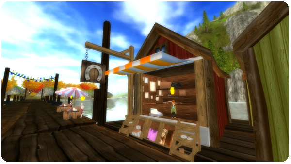
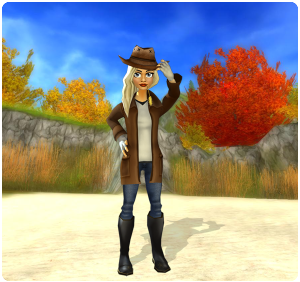

Hello everyone!
First and foremost, we want to thank you for all the positive emails and comments regarding last week's big update!
New equipment for your horse:
A new equipment shop on the deck between Cape West Fishing Village and the Golden Leaf stable is now open.
Check out the new cool equipment for your horse!

Deluxe Set:
UIn the same shop you will also find a saddle, blanket and reins that is a part of the Golden leaf Deluxe Set.
My Stable:
We have added more space to My Stable so now you can fit all of your clothes and equipment!
Next week's update:
We have noticed that many of our players are interested in Western Riding and next week's update will therefor be inspired by Western Riding!

Best regards: